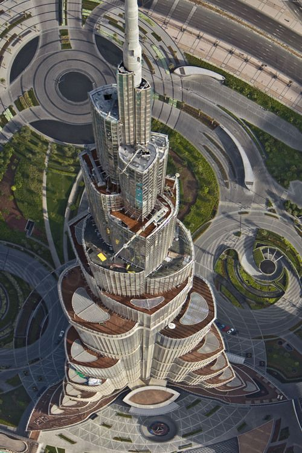

|
Burdż Chalifa, znany również jako Wieża Chalify, jest najwyższym budynkiem na świecie,
który pobił poprzedni rekord wysokości polskiego Masztu radiowego w Konstantynowie (646 m).
Nazwa wieżowca pochodzi od imienia szejka Chalify ibn Zajida Al Nahajjana, byłego prezydenta ZEA.
Architektura Burdż Chalify nawiązuje do kwiatu pustyni z rodzaju Hymenocallis oraz elementów architektury islamu.
Budynek składa się z centralnego rdzenia i trzech "ramion", które zmniejszają się wraz z wysokością, nadając mu smukłość.
Na szczycie centralny rdzeń przechodzi w iglicę.
Najniższe piętra wieżowca przeznaczone są na hotel, którego wystrój zaprojektował Giorgio Armani.
Burdż Chalifa stał się symbolem nowoczesnego Dubaju i jednym z najbardziej rozpoznawalnych budynków na świecie.
|
 |